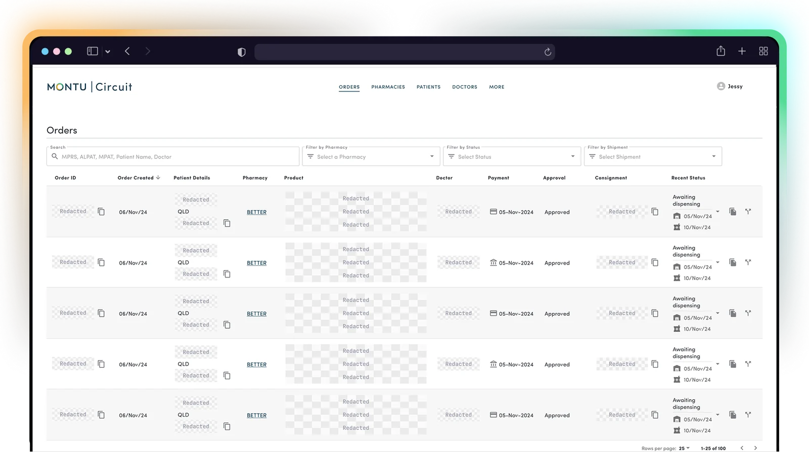
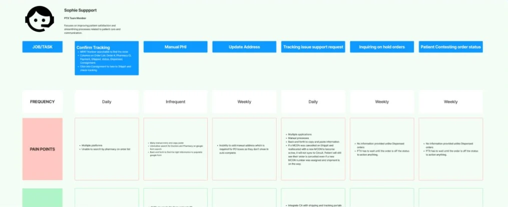
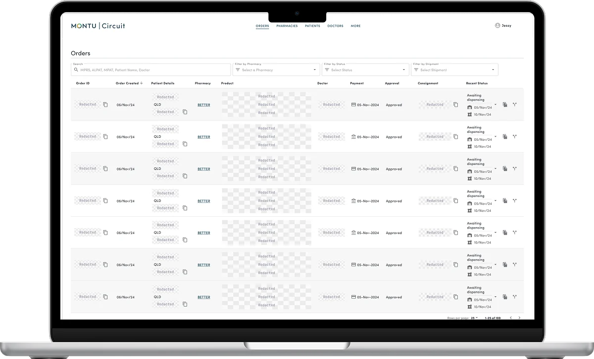
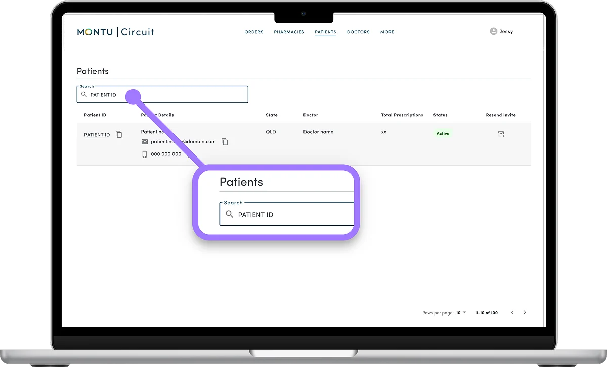
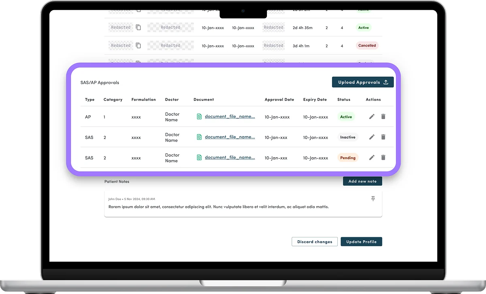
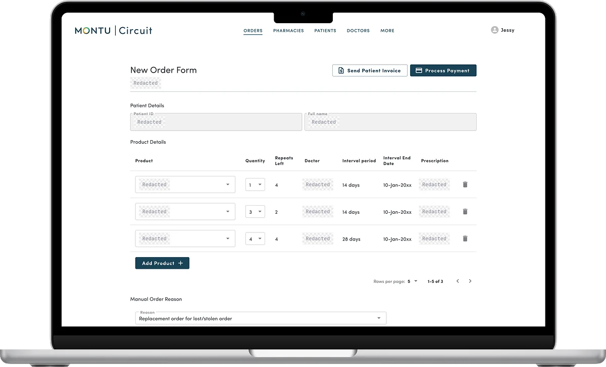

Case study · Internal tooling · Operations · Circuit admin redesign
Circuit had grown for years without anyone asking the people who live in it.
Circuit is the internal admin portal Montu's operations teams use to manage orders, patients, approvals and pharmacies. I led the research to find where it was failing them, then set a design direction grounded in what I found. After the redesign, satisfaction on every core screen went from below the line to between 4.6 and 5 out of 5.
0 m The short version

Case study · Internal tooling · Operations · Circuit admin redesign
The short version
Circuit was a legacy admin portal that grew without evolving. I researched how the people using it actually worked, and rebuilt it around their workflow.
I led discovery and usability research with ten people across PTX, PharmOps and Clinical, and reviewed every core screen against usability heuristics and accessibility. That became a workflow-first redesign on the Montu MUI design system. Version 1.2 lifted satisfaction on every core screen from below the line to between 4.6 and 5 out of 5.
0–200 m The problem
It grew, but it never evolved.
Circuit started with an external agency that had limited business context. Over the years, features were layered on top of features, a frankenstein build stitched together by whoever needed the next thing shipped.
It worked, technically, but it fought the people using it. Designs were added without checking user needs, workflows were disjointed, and with no shared standards every new screen drifted further from the last.
No user-centred design
Design was outsourced, and functionality was added without validating user needs or doing research.
Disjointed workflows
Ad-hoc additions left the PTX team moving through a fragmented portal with manual steps and several tabs open.
Usability and design gaps
With no cohesive standards, inconsistencies piled up and dragged on usability and productivity.
200–1,000 m Research
I started by sitting with the people who use it every day.
The plan had three parts: understand the work, validate the redesign, then synthesise and align with the teams who would build it.
Understand the work
Semi-structured interviews, contextual inquiry to watch real usage, and a Pre-Post improvement score to set a baseline.
Validate the redesign
Task-based testing on real scenarios like flagging orders and AP/SAS approvals, with a think-aloud protocol and prototype testing.
Synthesise and align
Thematic analysis, the Pre-Post score, peer reviews, and prioritisation workshops with delivery and product against OKRs.
Who I spoke to

1,000–4,000 m Heuristic review
I also pulled the interface apart, screen by screen.
Alongside the user sessions, I ran an expert heuristic evaluation of every core Circuit screen. I scored each issue against usability heuristics and Gestalt principles, checked accessibility, and tagged it by the fix it needed. All of it is documented on Confluence for stakeholder visibility.
How I did it
One surface at a time
I walked the four core surfaces in turn: Orders list, Order details, Patients list and Pharmacies.
Heuristics and Gestalt
I evaluated each screen against usability heuristics and principles like similarity and proximity.
Automated audits
WebAIM WAVE flagged contrast, focus and semantic-markup issues.
Tagged by the fix
Every issue got a category, and a label for the work it needed: improvement, rewrite or redesign.
Evidence for each finding
Annotated screenshots and sketched concept redesigns backed every finding.
What it surfaced
Ambiguous tables and labels
Headings that did not say what they meant (one "Date" for payment, order or shipping), unlabelled icons, and unrelated controls side by side.
Broken responsiveness
Tables and the header did not scale, which cut off data when the window was resized.
Hidden, unexpected behaviour
Users had to clear the search field to see orders, filters worked one at a time, and the page went blank when filters were removed.
Accessibility debt
Around 150 errors across the core screens, plus missing focus states, low contrast and link colours that failed WCAG.
Drift from the design system
Buttons, hovers and layouts were inconsistent with the Montu MUI design system.
Orders list, automated accessibility errors
Patients list, automated accessibility errors
Order details, missing form-label errors
Pharmacies, automated accessibility errors
Source · Circuit heuristic review with WebAIM WAVE, 2024.
2,600 m What I heard
Four themes ran through everything people told me.
Data visibility and integration
Circuit was not integrated with the pharmacy system, so people tracked approvals, cancellations and dosage by hand. Fragmented data made compliance hard to follow.
Usability and navigation
Unintuitive filters, excessive scrolling and inconsistent layouts created friction, and search was limited by identifiers.
Workflow efficiency
Tracking, flagging and reallocating orders meant manual steps and multiple tabs, with no order flagging, status history or bulk actions.
Compliance challenges
AP and SAS approvals were cumbersome and error-prone without visibility, so people tracked the rules in external spreadsheets.
The baseline, before any redesign
I captured a Pre score on a five-point scale across the core screens. Every one of them sat below the line.
Order list, out of 5 at baseline
Order details, out of 5 at baseline
Patient list, out of 5 at baseline
Patient details, out of 5 at baseline
Source · Pre-Post improvement score, Circuit usability research, Nov 2024.
4,000–6,000 m The direction
The findings pointed to one priority: give the operations teams their time back.
I sequenced the work into phases. The first features went after workflow efficiency, built on one consistent MUI design system.

01 Workflow
Duplicate, order flagging, status history and bulk actions
These were the tools people kept asking for. Duplicate, flag and track orders, see a clear status history, and act on many orders at once instead of one tab at a time.
02 Shipped
Search the way people actually work
Find patients and orders by the identifiers used day to day, including patient ID, in simplified tables that lead with the most important information.


03 Shipped
Approvals with visibility built in
AP and SAS approval handling moved into Circuit, with the visibility and structure that used to live in spreadsheets. That cuts down on human error.
04 Shipped
One consistent design system
A shared MUI-based design system makes every screen consistent by default, which ends the drift that caused the usability gaps.

A selected list of four highly requested screens and flows that let internal users finish their jobs and make fewer errors. Sensitive information is redacted and placeholder information is shown.
5,400 m Results
Every core screen moved, and moved a lot.
I re-ran the same Pre-Post improvement score on the v1.2 redesign, rebuilt on the Montu MUI design system, with the same teams. Satisfaction on every core screen climbed from below the line into the 4.6 to 5.0 range.
Order list, up from 2.6
Order details, up from 3
Patient list, up from 3
Patient details, up from 2.6
Source · Pre-Post improvement score, Circuit v1.2 usability testing, five-point scale.
What users said about v1.2
Clear at a glance
10 of 10 found the layout clean and clear, and 9 of 10 said it gave enough information for a faster workflow.
Less hunting
8 of 10 had less scrolling and better filters, and 10 of 10 liked the intuitive search and the new patient ID search.
Real time savers
10 of 10 loved copy-to-clipboard, and 10 of 10 valued the Status History Log that shows what changed, when and by whom.
Approvals in view
All 3 clinical users liked the new SAS approval and upload UI, and 10 of 10 liked the clearer remaining units and repeats.
6,000 m + Operational impact
The satisfaction lift is really time handed back to the team.
The features users rated highest were bulk actions, status history, copy-to-clipboard and faster search. They all attack the same thing: the manual steps, extra tabs and side spreadsheets between a PTX agent and a finished task. Modelled against the workflow that shipped, the saving adds up quickly.
Faster on key tasks: search, flagging, reallocating and approvals
Saved per agent, per day, from fewer manual steps, tabs and lookups
Saved a year across the PTX team, conservatively
Capacity freed to handle more, without hiring
Modelled estimate from the usability findings and shipped features, not a measured result. Assumptions: about 25 PTX agents handling about 80 actions each per day, with the highest-friction tasks cut by about 40%.
What that means for the company
Growth without headcount
The freed capacity absorbs rising patient volume without adding PTX headcount, so support cost stays flat as the business grows.
Faster turnaround
Quicker orders and approvals mean quicker responses for patients and pharmacies, which supports retention.
Lower compliance risk
Bringing AP and SAS approvals into Circuit, out of side spreadsheets, cuts manual-handling errors.
Cheaper future changes
A consistent MUI design system makes every future change cheaper to build and quicker to ship.